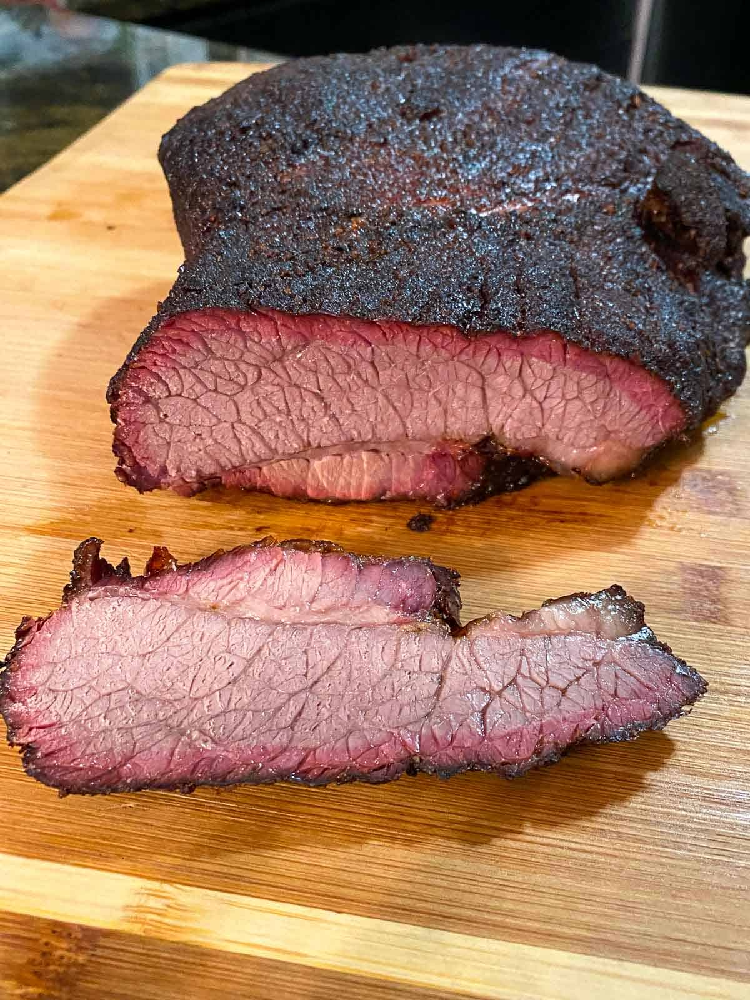
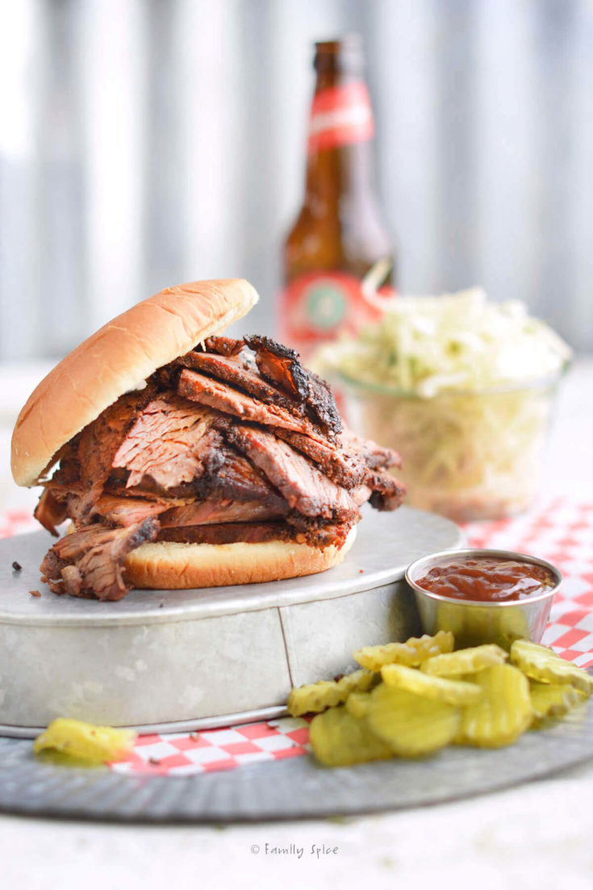
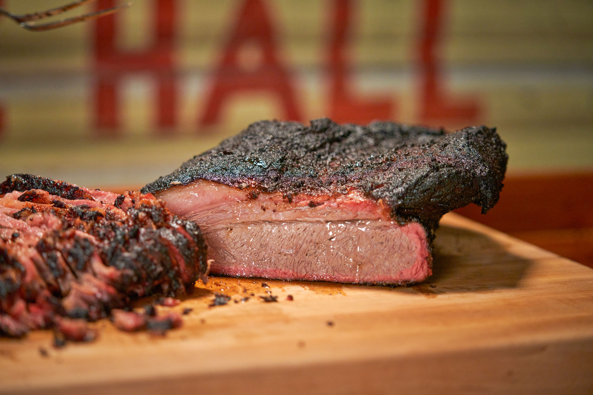
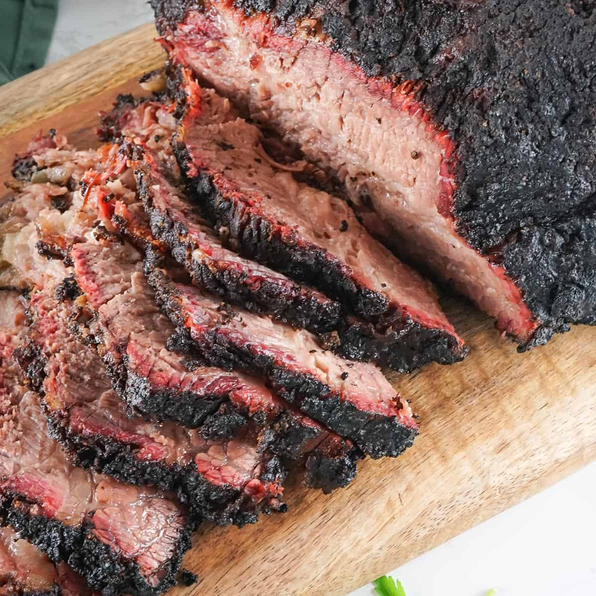
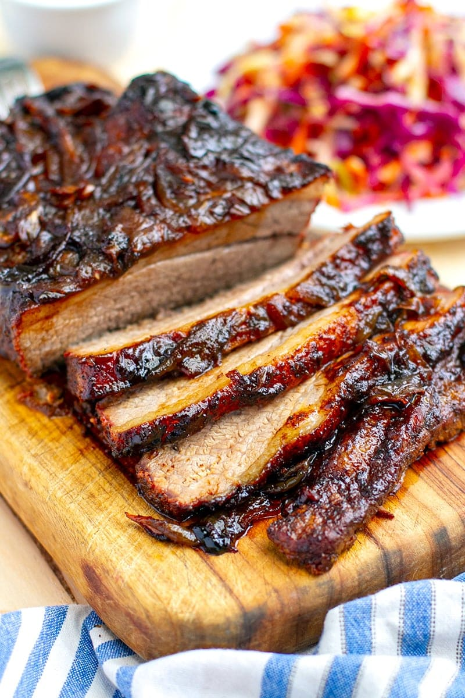
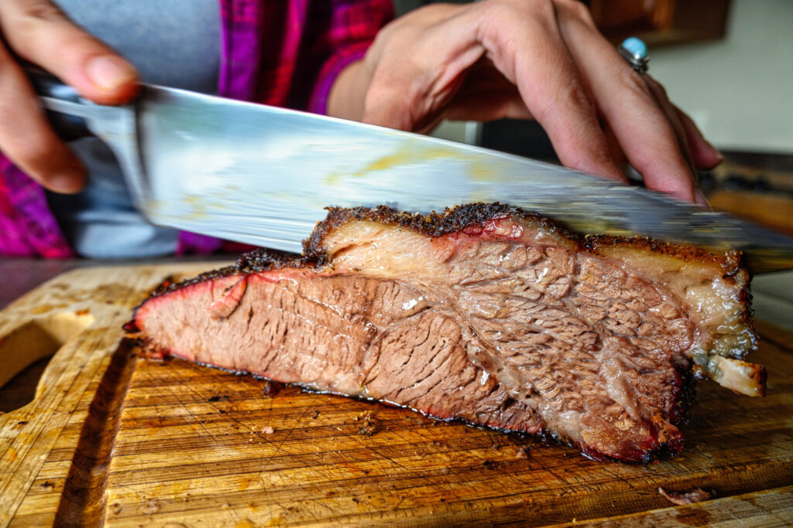

Ingredients
- 1 whole beef brisket (8-10 lbs)
- 3 tbsp kosher salt
- 2 tbsp black pepper
- 1 tbsp smoked paprika
- 1 tbsp garlic powder
- 1 tbsp onion powder
- 1 cup BBQ sauce
- Wood chips for smoking (hickory or oak)
Instructions
- Preheat your smoker to 225°F (107°C) and add wood chips for smoke.
- In a small bowl, mix salt, black pepper, smoked paprika, garlic powder, and onion powder.
- Rub the spice mix generously all over the brisket.
- Place the brisket in the smoker, fat side up, and smoke for about 1 hour per pound.
- After 5 hours, spritz the brisket with water or apple juice every hour to keep it moist.
- Once the internal temperature reaches 165°F (74°C), wrap the brisket tightly in foil or butcher paper.
- Continue smoking until the internal temperature reaches 200-205°F (93-96°C).
- Remove the brisket from the smoker and let it rest, wrapped, for at least 30 minutes.
- Slice against the grain and serve with BBQ sauce on the side.
Image Carousel





